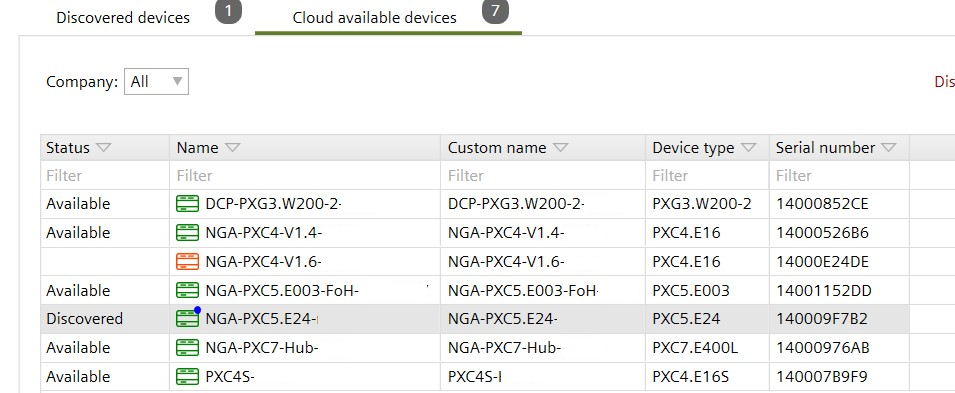

显示云可用设备
图标 | 描述 |
|---|---|
设备已上线，但未连接到 X 楼。请检查设备不再在线的原因。 | |
该设备已注册并连接到 X 楼。该设备可以发送值、警报和趋势等信息。从工程工具下载和上传。 | |
该设备已注册并连接到 X 楼，并通过 CloudLink 连接。设备发送数值、警报和趋势等信息，并可以从工程工具下载和上传。其他调试功能可用且可操作。 | |
设备已通过 CloudLink 连接到 X 楼，但 X 楼与设备之间的连接丢失或中断。状态需要一些时间更新，点击Refresh更新状态。 |
- The Enable cloud check boy is enabled to get access to the device.
The Enable BACnet tunnel check box is enabled for remote engineering.
Cloud port - A cloud connection has been established.
Connecting via a cloud connection
- Select Startup > Configure and download.
- In the Discovered devices tab, select the Cloud available devices tab.
- In the Company drop-down list, select All or a [Company name].
- The device list shows the cloud connected devices.
